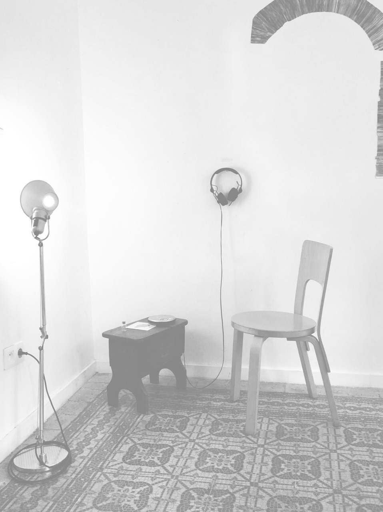
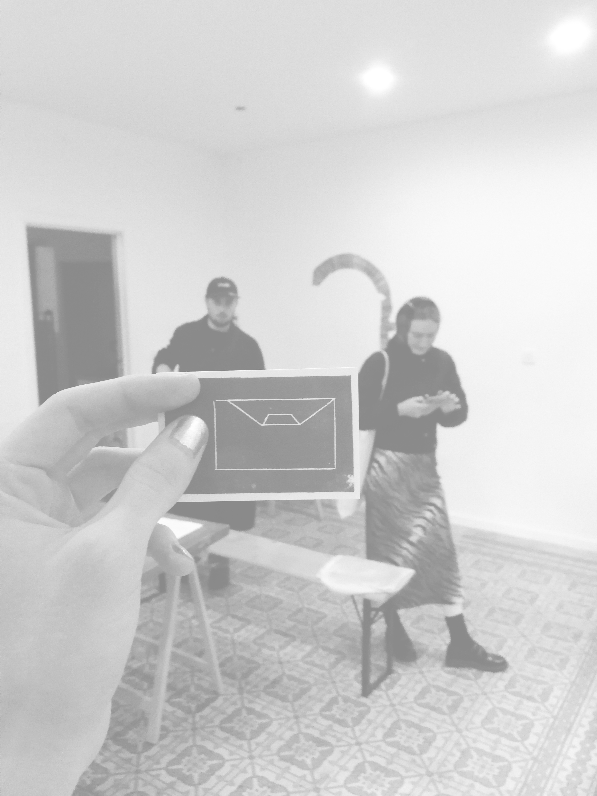
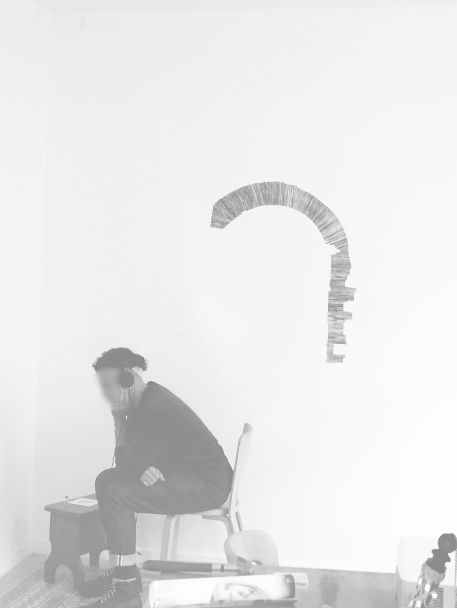

Il était vraiment
une fois
This audio piece is an autofictional tale of someone trying to navigate through romantic and sexual
norms and break free from them. How does one embrace their desires?
The recording of the tale broadcast through sound installation was accompanied with personal and symbolic objects.
Written, recorded, and presented for the projet and exhibition "Cis White Men Hetero Phobia/Topia" by Victor Abraham Lacô at The Green Corridor (Brussels, BE) in September 2024.


